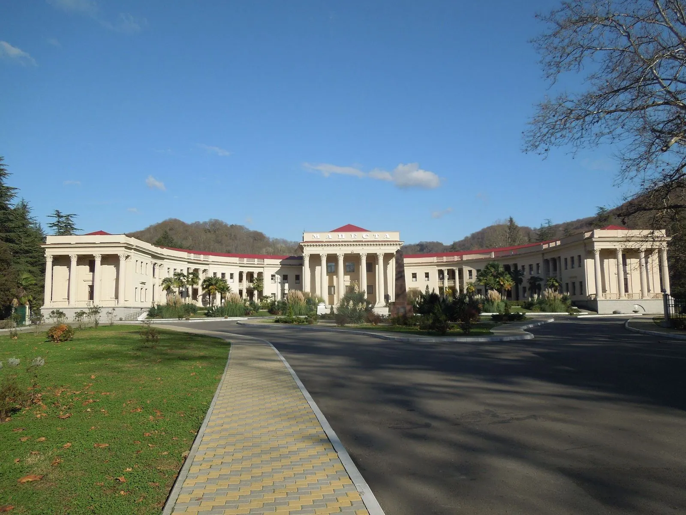
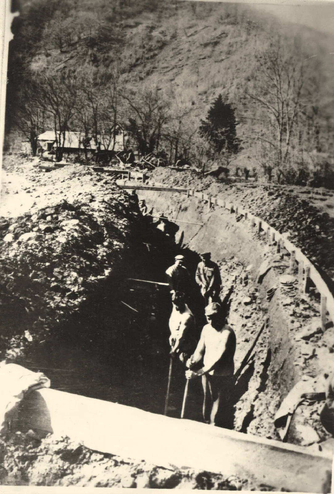
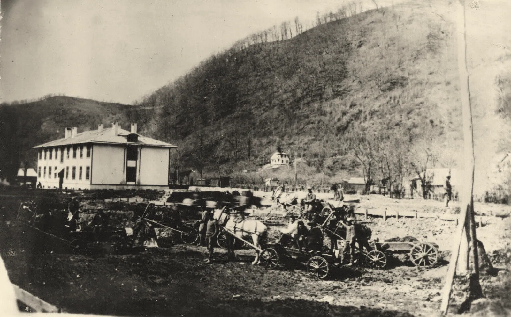
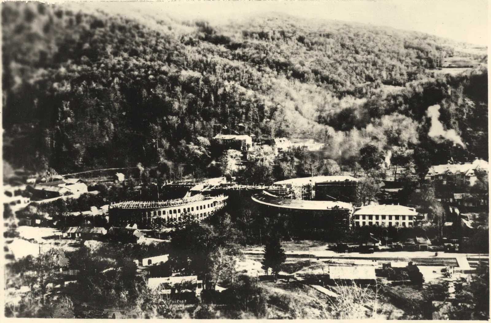
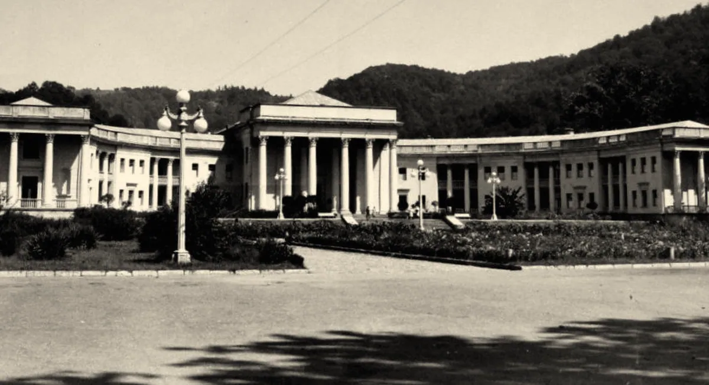
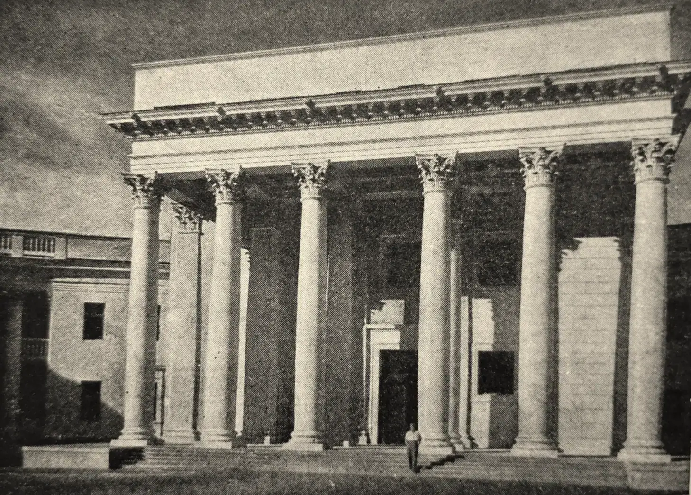
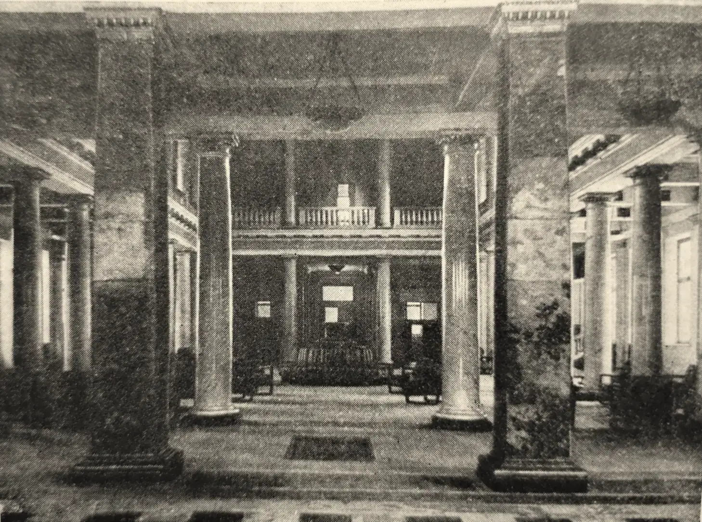
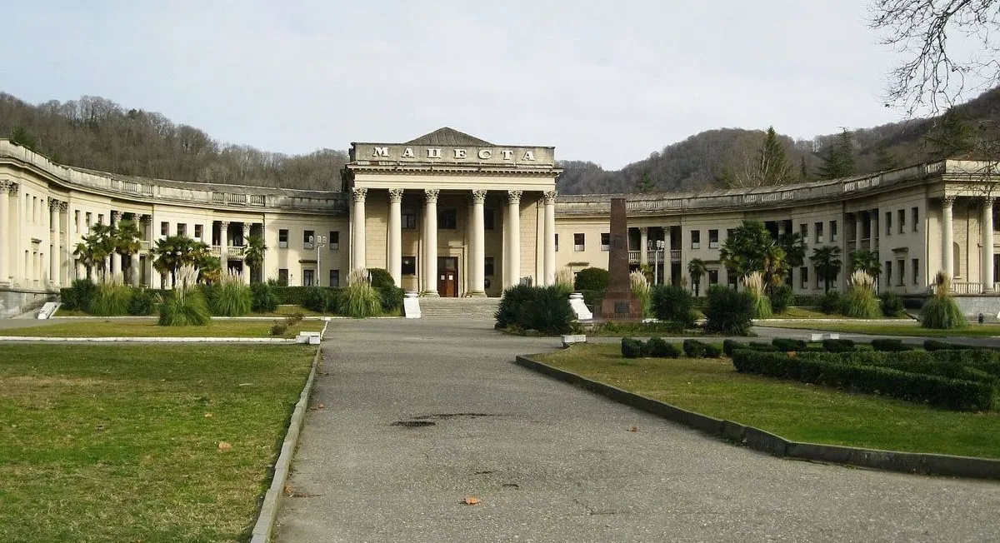
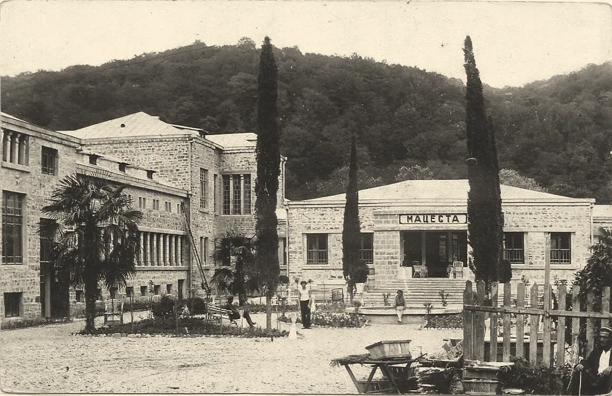

«Точного анализа вод ещё нет»
Так о Мацесте писала энциклопедия в 1900 году. Через сорок лет здесь стоял дворец
Ванное здание № 4 сегодня. Фото: Masha Linnik, 2014, CC BY-SA 4.0
Глава четвёртая
1902
Мацеста
Сначала две деревянные ванны у пещеры, потом здание с колоннами, как античный храм.
Старая Мацеста: источники и ванное здание № 4






- 1937: роют траншею под фундамент ванного здания № 4Листайте: камера въезжает в здание, пока идёт время. Архивный снимок, PastVu № 1599033
- Начало стройки: земляные работы на подводах, лошадьмиМузей истории Хостинского района, PastVu № 698592
- 1939: в долине растут два полукруглых крыла. Внизу — разъезд «Старая Мацеста»Музей истории Хостинского района, PastVu № 696762
- Здание открыли в 1940 году. Подпись на открытке 1952 года — «Сочи. Мацеста. Корпус № 4»Архивный снимок, PastVu № 454113
- Шесть колонн портика: вход в лечебницу устроен как вход в античный храмИз книги Н. Б. Соколова «Сочи — Мацеста», 1950, PastVu № 2483595
- Внутри — колонны, мрамор, каменный пол. Сюда приходили не отдыхать, а лечитьсяИз книги Н. Б. Соколова «Сочи — Мацеста», 1950, PastVu № 2483596
Что это
Курорт, где лечит вода
Мацеста — долина небольшой реки в Хостинском районе Сочи. Из-под земли здесь выходит вода с , и на ней построили крупнейший в России курорт — то есть место, где лечат минеральной водой.
Главное здание курорта, ванное здание № 4, похоже на античный храм больше, чем на больницу. Отсюда видно, как государство строило курорт: сначала две деревянные ванны у пещеры, потом дворец с колоннами.
- Где
- Старая Мацеста, Лечебный переулок; Хостинский район
- Когда
- первые ванны 1902; ванное здание № 4 — 1937–1940
- Кто
- врач Виктор Подгурский; архитектор здания № 4 — А. П. Голубев (по данным курорта)
- Сейчас
- курорт работает; здание № 4 — объект культурного наследия
Как это появилось
От ямы у источника до дворца
До врачей
Сероводородные источники местные жители знали давно: выкапывали ямы у источника и купались в них. Название — абхазское «Мцаԥста» и адыгское «МэшIопсы» — чаще всего переводят как «огненная вода»: по распространённой версии, потому что после ванны кожа краснеет. Есть и другое объяснение — «место, где ударила молния».
1886–1900
В 1886 году воду впервые проанализировал химик Генрих Струве, в 1898 году источник исследовал М. В. Сергеев. Но в 1900 году энциклопедия Брокгауза и Ефрона всё ещё писала: «точного анализа вод ещё нет». В 1898 году в посад приехал 24-летний врач Виктор Подгурский и начал изучать источники.
15 (28) сентября 1902
У пещер Старой Мацесты в небольшом деревянном здании поставили две деревянные ванны, и Подгурский впервые отпустил сероводородные ванны под наблюдением врача. С этого дня считают начало курорта.
1910–1912
Источники арендовал предприниматель Михаил Зензинов: за год построили каменную и гостиницу-пансион, в 1912 году образовали акционерное общество «Мацестинские серные источники».
1919
Совнарком передал все курорты и лечебные местности в собственность республики, и Мацесту национализировали: она стала .
1922–1926
В 1922 году открыли автомобильное сообщение со Старой Мацестой, в 1924 году — ванное здание на Новой Мацесте с трубой от источника. В 1926 году журнал «Современная архитектура» опубликовал проект планировки курорта архитектора Авраама Зильберта.
1934–1940
В 1930-е годы в Сочи лечились и отдыхали руководители страны, среди них Иосиф Сталин; по словам самого курорта, после лечения он рекомендовал Мацесту соратникам. В 1934 году началась реконструкция: новые скважины, дорога между Старой и Новой Мацестой, в 1936–1938 годах — виадук. Ванное здание № 4 строили с 1937 года и ввели в 1940-м.
1941–1945
Раненых из сочинских госпиталей возили на мацестинские процедуры; по данным курорта, за войну здесь поправили здоровье больше 100 тысяч человек. В 1942 году бомбёжки разрушили здания на станции Мацеста.
1979 · 2027
Коллектив курорта наградили орденом «Знак Почёта». В 2027 году курорту исполнится 125 лет.
Сравните
Корпус № 4: 1950 и 2012

Потяните ползунок. Кадры совмещены по центральному портику; открытку снимали левее оси здания, поэтому крылья расходятся.
Открытка 1952 года «Сочи. Мацеста. Корпус № 4», сайт newmolot.ru, PastVu № 454113. Фото 2012: Alexander V. Solomin, 2012, CC BY-SA 3.0
1900
«Оба источника посещаются больными туземцами…»
Энциклопедический словарь Брокгауза и Ефрона, т. XXXI, статья «Сочи (Даховский посад)»
Галерея
Мацеста за сто лет
На что посмотреть на месте
Четыре точки долины
-
1
Ванное здание № 4
Построено в 1937–1940 годах, архитектор А. П. Голубев, стиль — . В центре шестиколонный портик, по сторонам два огромных полукруглых крыла, между ними сад. Внутри — мрамор и ценные породы дерева. Здание — объект культурного наследия регионального значения.
Фото: Masha Linnik, 2014, CC BY-SA 4.0
-

2
Пещеры с источником
У подножия скал — : стены покрыты губчатым гипсом и местами присыпаны порошком серы. Вход закрыт решётками, запах сероводорода слышен вокруг. Мацестинский источник — памятник регионального значения.
Фото: Alex Alex Lep, 2017, CC BY-SA 4.0
-
3
Скульптура «Мацеста» на повороте дороги
Скульптор Ираида Гуслева и архитектор Евгений Сердюков вмонтировали её в скалу. Скульптура изображает героиню адыгской легенды: девушку Мацесту, которую оклеветала сестра и которая от стыда «ушла под землю»; потом она вернулась источником, чтобы лечить людей.
-
4
Мацестинский виадук
Мост через долину реки Мацесты построен в 1936–1938 годах по проекту архитекторов В. Г. Гельфрейха и В. А. Щуко в рамках генеральной реконструкции Сочи-Мацестинского курорта.
Фото: Masha Linnik, 2014, CC BY-SA 4.0

Источник: энциклопедия Брокгауза и Ефрона, 1900
«В окрестностях С. сернистые источники: Мацеста (в 10 верстах) и Агура (в 12 верстах) вверх по течению речек тех же названий. Оба источника посещаются больными туземцами; «Мацеста» исследован М. В. Сергеевым в 1898 г. и найден принадлежащим к весьма сильным сернисто-соленым водам; «Агура», очевидно, того же состава. […] Вода их с сильным запахом сероводорода. Местами жители пользуются ими для купаний при накожных болезнях. Точного анализа вод еще нет.»
- Что видно
- За два года до первой лечебницы источники известны, но лечатся в них местные жители сами, а точного анализа воды нет.
- Что учесть
- «Туземцы» — язык эпохи: так энциклопедия называла местных жителей. «С.» в тексте — Сочи.
Значение для Сочи
Лечебная вода сделала Сочи курортом, куда едут лечиться, а не только отдыхать.
Значение для России
С 1919 года курорты в Советской России — государственное достояние; Мацеста стала витриной советской системы санаторно-курортного лечения и остаётся крупнейшим бальнеологическим комплексом страны.
Раздел курса: 2. Российское государство-цивилизация
Ценность: созидание и развитие

Факт, который мало кто знает
«Огненная вода» — название не про жар: вода в Мацесте не горячая. По распространённой версии, так её назвали потому, что после ванны кожа краснеет; есть и другое объяснение — «место, где ударила молния».
Ванное здание на Новой Мацесте, 1930-е. Фотография 1930-х годов; Госкаталог РФ, PastVu № 1409032
Что вы узнали
Три вещи о Мацесте
Сначала — вода
Мацеста — сероводородные источники: местные жители купались в ямах у источника, а в 1902 году врач Виктор Подгурский начал лечить ваннами под наблюдением врача.
Курорт государства
С 1919 года курорты в России стали государственными; в 1937–1940 годах в долине построили монументальное ванное здание № 4 — «дворец здоровья».
Лечили и раненых
В войну на Мацесту возили раненых; сегодня курорт — крупнейший бальнеологический комплекс России, а в 2027 году ему исполнится 125 лет.
Проверьте себя Почему мацестинскую воду называют «огненной», если она не горячая?
По распространённой версии, после ванны кожа краснеет, будто обожжённая; название — не про температуру воды, а про этот эффект (версия, не доказанный факт).
Источники главы 13 публикаций: энциклопедия 1900 года, сайт курорта, архитектурный журнал 1926 года
- Мацестинский курорт — Википедия
- Мацеста (река) — Википедия
- Мацеста (Сочи) — Википедия
- Сочи (Даховский посад) — ЭСБЕ, т. XXXI (1900), Викитека
- О курорте — Бальнеологический курорт «Мацеста»
- Культурное наследие — Бальнеологический курорт «Мацеста»
- В войну Сочи превратился в громадную клинику — «Российская газета», 13 мая 2020
- Санаторий — Википедия (декрет 4 апреля 1919 года)
- Туризм в России — Википедия (декреты 1919–1921 годов)
- Сочи — Википедия, раздел «История»
- OpenStreetMap: Лечебный переулок, Старая Мацеста (через Nominatim)
- PastVu № 454113, № 698592, № 696762, № 1599033: фотографии ванного здания № 4
- Проект курорта Сочи-Мацеста А. Э. Зильберта, «Современная архитектура», 1926, № 1 — Wikimedia Commons